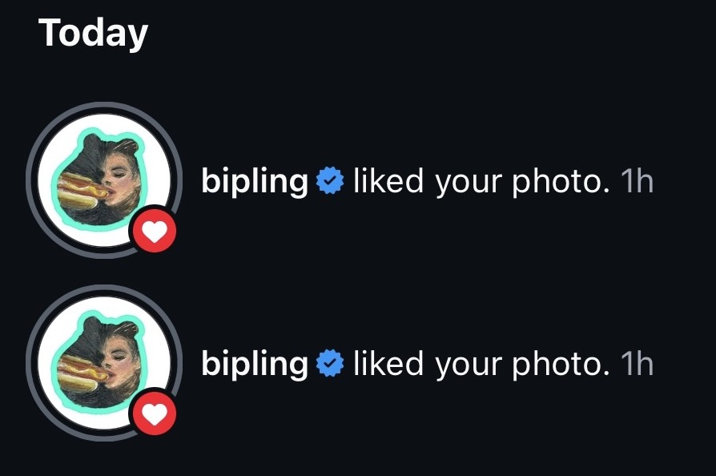
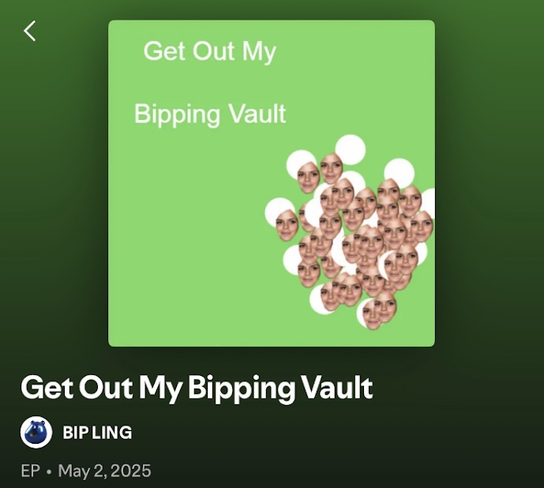
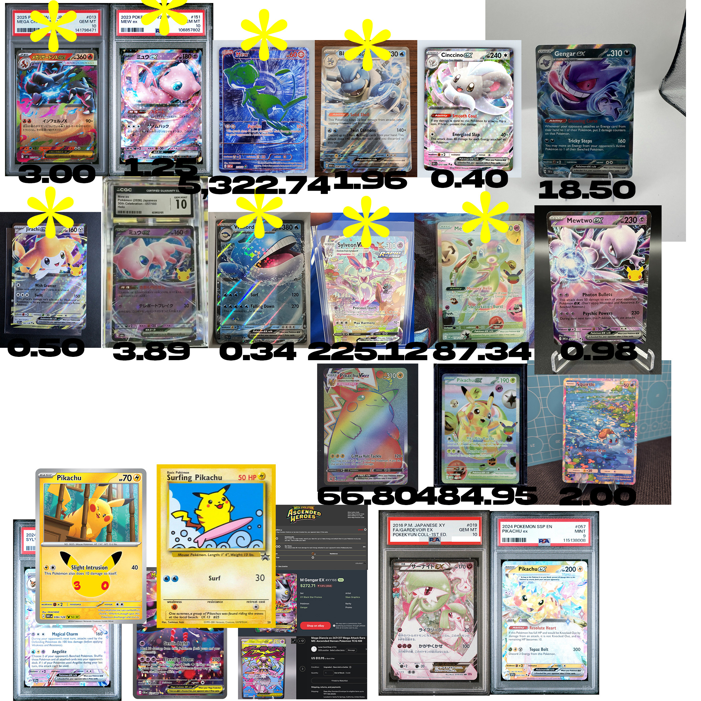

h3cc0ut__ blog
10/8/26
instagram deleted nearly all of my saves on main . this reminds me of when twitter removed the beginning of my saves . i get that there's only a limited amount of storage u can have for your accounts , but it's urls . . i'm reading hands-on large language models from o'reilly right now .


bipasha elizabeth ling clicked on my shit the other day . probably top 10 names of all of human history .

south p̶a̶r̶k̶ america is back . this season is good so far .
9/27/26

spent last week at rogers.. missed my bed so much. i take meds by injection every other month now. i'm typing 90 today. these are my favorite pokemon cards as of right now. going through all of the xmen movies this weekend. update on mushoku tensei: not good. i'm thinking about playing ffxi
7/29/26
started watching mushoku tensei

it's pretty good so far, we'll see
7/26/26 neocities deleted my website
lost a number of @s of tattoo artsits and my archive of twitter posts.

github takes longer to update than neocities, but it's better than having to host a website myself. there wasn't a blog on the neocities version of this site, i think i'm gonna keep this though. it's really frustrating how changes to my css won't load in. we're trying red text

yeah, so that's a no. we'll wait until the text switches to grey and then see if we even want a background image. i downloaded youdj and the ui and functionality are great, but the library sucks. honestly the best thing is probably a cdj or two. really upsetting how google drive only lets you playback mp4s @ 1080p, but what can you do? maybe years down the line that will change.

guess what i'm thinking about